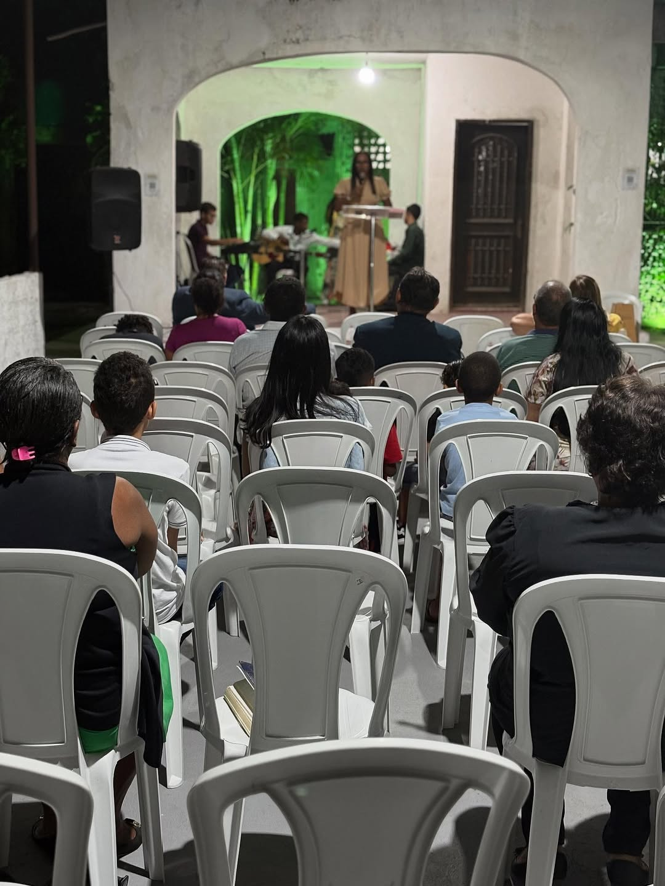
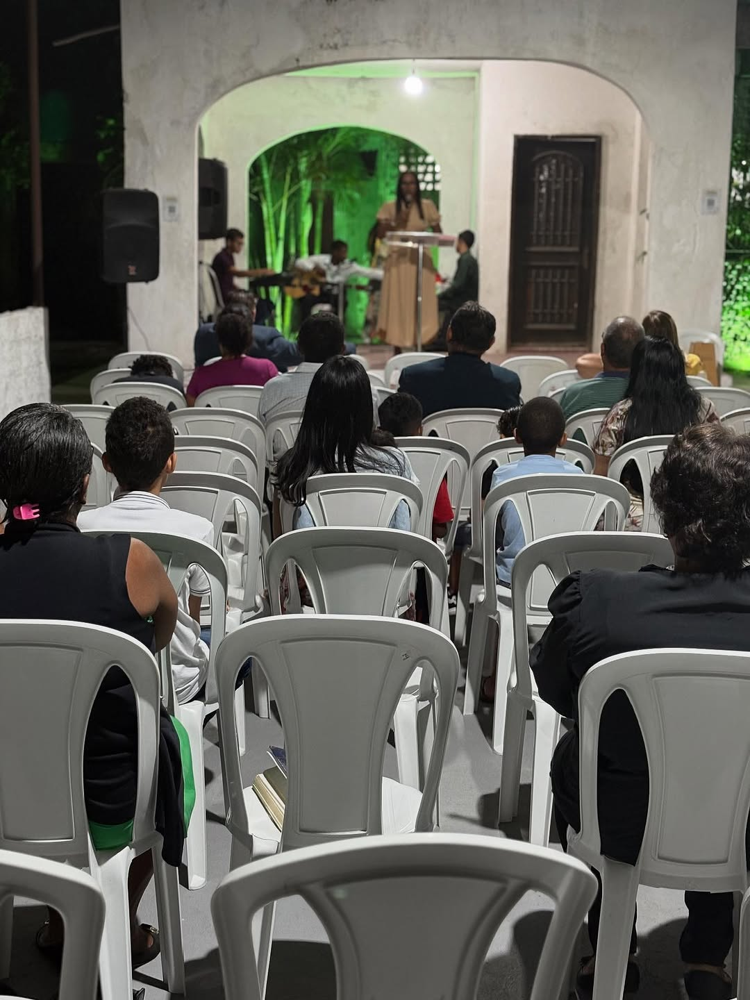

Pregando o Evangelho. Edificando vidas.
O Ministério Maranata Internacional nasce de uma direção clara de Deus, comprometido com a Palavra e a transformação de vidas.
Leia nossa história completa19:30h
Culto Edificando na Palavra19:30h
Culto de Oração08h
Escola Bíblica Dominical18h
Culto de Adoração 



📍 Avenida Luís Eduardo Magalhães, S/N
Limoeiro — Camaçari/BA
CEP: 42802-580
📞 (71) 99931-5043
✉ maranatammi@gmail.com